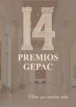
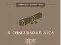

GEPAC recuerda que siguen abiertos los plazos para participar en dos de sus iniciativas más destacadas de 2026: la 14ª Edición de los Premios GEPAC y el XI Concurso de Relatos de GEPAC.
La convocatoria mantiene abierto el periodo de presentación de candidaturas para profesionales, entidades, pacientes y proyectos que contribuyen a mejorar la vida de las personas con cáncer y sus familiares. Desde GEPAC se anima a participar y a difundir estas convocatorias para llegar al mayor número de perfiles posible.
También continúa abierto el plazo del XI Concurso de Relatos de GEPAC, una iniciativa orientada a visibilizar experiencias, emociones y aprendizajes vinculados al cáncer desde la perspectiva de pacientes, familiares y entorno cuidador.
Como novedad de esta edición, todas las personas finalistas recibirán una participación para el sorteo de un viaje para dos personas a Riviera Maya, del 6 al 14 de julio, para disfrutar de la experiencia junto al grupo GEPAC.
Consulta la información general de la convocatoria:
Premios GEPAC · Información y bases
Presentación de candidaturas · 14ª Edición Premios GEPAC:
Acceder al formulario de candidaturas
Presentación de candidaturas · XI Concurso de Relatos GEPAC:
Acceder al formulario de relatos
